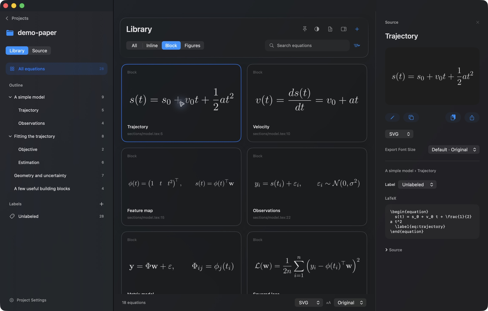

Start with your math.
Open a LaTeX or Typst project, or paste equations into a template of your own. TikZ and CeTZ drawings belong here, too.
N Paste. Create. Browse.A little less typesetting.
Find the equation. Make it yours.
Bring it to your slides as a beautifully crisp SVG.
Built for Mac · macOS 26+ · Apple Silicon

LESS FRICTION. MORE IDEAS.
Open a LaTeX or Typst project, or paste equations into a template of your own. TikZ and CeTZ drawings belong here, too.
N Paste. Create. Browse.Navigate from the PDF or your paper’s outline, and add your own labels. Double-click to make a version for your talk, keeping the source intact.
Source Custom equationSet a font size, copy the SVG, and paste it into PowerPoint. Vector paths stay sharp at every size.
SVG 10–96 ptOpen Project (⌘O) opens a folder, ZIP, or main .tex / .typ file, including a project you have never opened in Mathlidelux before. Use it to keep companion files, imports, images, and project settings together.
New Project (⇧⌘N) creates a project from a template and pasted equations. Choose a template, add your text, then click Create Project to save and render it.
Load File…, inside New Project, loads a UTF-8 .tex, .typ, or .txt file into the text area instead of copying and pasting. It leaves the original file unchanged. Only its text is loaded; companion files are not copied.
Use Source to edit project files, packages, and commands with a file tree and syntax completion. Changes save automatically and refresh the library and PDF; manual saving is available in Settings. In the library, select multiple cards with Command-click, Shift-click, or a selection rectangle, then export them together.
LaTeX includes common math packages. Typst uses Typst’s own math syntax. LaTeX + TikZ and Typst + CeTZ also load drawing tools for their respective formats.
In Settings → Templates, customize a built-in template to save your own packages, macros, or fonts, and choose a default. Custom templates appear alongside the four built-ins.
Auto recognizes common source markup, or treats each line as an equation. Choose One per line for bare formulas or Source to preserve math delimiters, headings, and multiline drawing code.
ROOM TO THINK BIG
Transparent backgrounds. Clean vector paths.
Your equations are ready for the front row.
Native Mac controls, with light and dark appearances that feel at home.
Pin the window above your slides. Adjust the background while your text stays clear.
Extraction and rendering run locally, using your own LaTeX or Typst tools and project settings.
A GOOD PLACE TO START
Explore a fictional teaching note filled with trajectories, matrices, and a little calculus. Download a ZIP below and choose Open Project in Mathlidelux.
LaTeX: 27 equations · Typst: 20 equations
LaTeX sample Typst sampleDrawing samples: TikZ ↓ · CeTZ ↓
Synthetic demos, made just for Mathlidelux.
READY FOR YOUR NEXT TALK
The first downloadable Mac build is on its way.
Download for MacmacOS 26+ · Apple Silicon
View on GitHubAll projects need Python 3. Typst projects need the Typst CLI (0.14+). LaTeX projects need a TeX installation such as MacTeX, latexmk, preview.sty, pdfcrop, pdf2svg, and Poppler; DVI projects also need dvips and Ghostscript.
Xcode is needed to build from source. It will not be required to use a packaged app. Open projects you trust.
Build and setup instructions